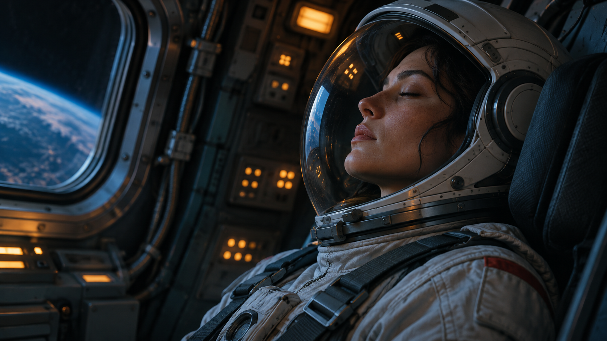
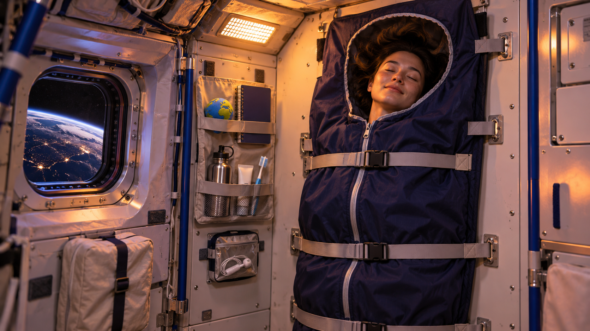

分支故事 · 太空現象
閉上眼，怎麼還有閃光？
航程中，米亞閉眼看見了亮點。你要先調查艙燈，還是追查儀器紀錄？每個決定都會帶來不同的對話與線索。
跟著見習航員與科學官米亞進入太空。觀看情節、做出決定，走出自己的故事分支。

分支故事 · 太空現象
航程中，米亞閉眼看見了亮點。你要先調查艙燈，還是追查儀器紀錄？每個決定都會帶來不同的對話與線索。

分支故事 · 太空生活
第一次在太空站過夜，你會先固定睡袋、收好筆記本，還是直接試著休息？不同安排將帶你進入不同的第一夜。